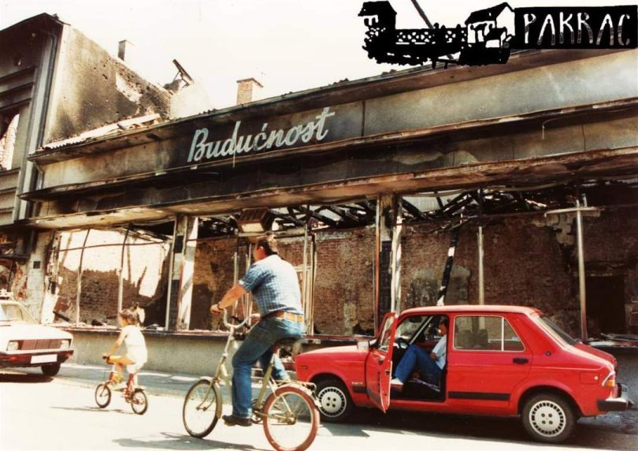
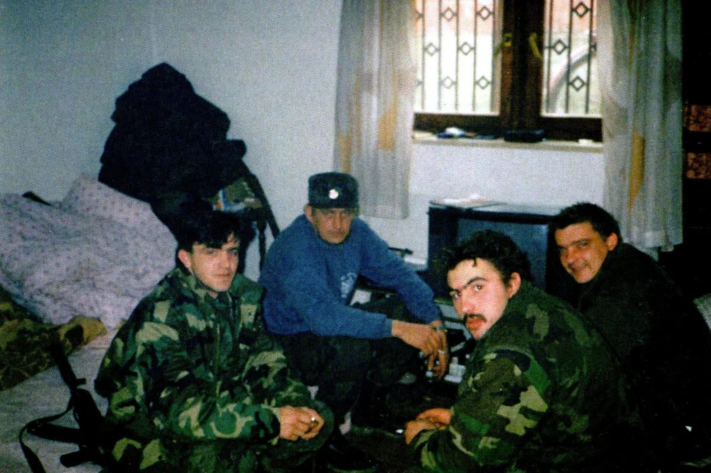

Dok se u kontekstu Domovinskog rata najčešće spominju Vukovar i Dubrovnik, zapadnoslavonski grad Pakrac drži povijesnu težinu mjesta u kojem je rat u Republici Hrvatskoj službeno započeo. Zbog svog specifičnog geografskog položaja i nevjerojatne hrabrosti branitelja, Pakrac je postao jedan od ključnih simbola otpora i pobjede.
Početak rata: Bitka za Pakrac – 2. ožujka 1991.
Pakrac je ušao u povijest kao mjesto prvog otvorenog oružanog sukoba u Hrvatskoj.
-
Pobuna:
Dana 1. ožujka 1991. godine, lokalni pobunjenici srpske nacionalnosti, uz pomoć dijela policajaca unutar same postaje, razoružali su svoje kolege hrvatske nacionalnosti i preuzeli kontrolu nad Policijskom postajom Pakrac. S vladinih zgrada skinuta je zastava Republike Hrvatske.
-
Reakcija Zagreba:
Predsjednik dr. Franjo Tuđman hitno je zapovjedio slanje specijalnih postrojbi MUP-a.
-
Oslobođenje:
U ranim jutarnjim satima 2. ožujka, pripadnici Jedinice za posebne namjene MUP-a RH iz Lučkog i Rakitja upali su u Pakrac, munjevitom akcijom neutralizirali pobunjenike i ponovno uspostavili ustavno-pravni poredak. Iako je tadašnja JNA poslala oklopna vozila pod krinkom "razdvajanja strana", hrvatske snage zadržale su položaje. Ovaj datum službeno se obilježava kao početak Domovinskog rata u Hrvatskoj.

Život na prvoj crti: Podijeljeni grad
Nakon općeg napada u kolovozu 1991. godine, Pakrac se našao u gotovo potpunom okruženju neprijateljskih snaga (Banjalučki korpus JNA i lokalne paravojne postrojbe). Grad je pretrpio strahovita razaranja, a linija fronte prolazila je doslovno kroz same gradske ulice:
-
Borbe prsa uz prsa:
Pakrac je bio podijeljen na hrvatski i okupirani dio. Borbe su se tjednima vodile za svaku kuću, ulicu i raskrižje.
-
Zagrebačka ulica:
Ova ulica postala je jedna od najpoznatijih bojišnica u Hrvatskoj – položaji branitelja i agresora bili su udaljeni svega nekoliko desetaka metara, a branila se u nadljudskim uvjetima.
-
Konstantno granatiranje:
Centar grada, stambene zgrade, barokna jezgra i crkva Uznesenja Blažene Djevice Marije sustavno su gađani teškim topništvom i minobacačima s okolnih brda (poput Omanovca).
Herojski čin: Evakuacija bolnice u Pakracu

Jedna od najhumanijih i najopasnijih epizoda rata dogodila se u noći s 29. na 30. rujna 1991. godine. Opća bolnica Pakrac nalazila se na samoj liniji razdvajanja i bila je pod stalnom paljbom. U potpunoj tajnosti, hrabri medicinski djelatnici i lokalni branitelji organizirali su evakuaciju više od 300 pacijenata, među kojima je bilo i oko 120 teških bolesnika s odjela psihijatrije (svih nacionalnosti). Kroz mrak i neprijateljski teritorij, pacijenti su uspješno prebačeni na sigurno u Kutinu. Ova akcija smatra se jednom od najplemenitijih operacija u cijelom Domovinskom ratu.
Ključne operacije i konačno oslobođenje
Pakrac i susjedni Lipik branili su se nadljudskim naporima domaće 76. samostalne bojne, policije te postrojbi iz cijele Hrvatske (Kutine, Garešnice, Virovitice, Zagreba i drugih).
-
Oslobođenje Lipika
prosinac 1991.: Susjedni Lipik oslobođen je 6. prosinca 1991., što ga čini prvim oslobođenim gradom u Hrvatskoj. Time je stvoren čvrst štit za obranu samog Pakraca.
-
Operacija Bljesak
svibanj 1995.: Iako su Sarajevskim primirjem 1992. godine borbe utihnule, dio pakračke općine ostao je pod okupacijom. Konačno i potpuno oslobođenje cijelog pakračkog područja uslijedilo je 1. i 2. svibnja 1995. godine u briljantnoj vojno-redarstvenoj operaciji "Bljesak", kada su hrvatske snage u manje od 32 sata slomile neprijateljski otpor u zapadnoj Slavoniji.

Trajna baština i ponos
Pakrac je iz rata izašao s ogromnim ranama – stotine poginulih branitelja i civila, uništena industrija i razrušeni domovi. Ipak, grad nikada nije pao. Danas, kroz stalni postav u Muzeju grada Pakraca i brojna spomen-obilježja, Pakrac s ponosom čuva sjećanje na dane kada se na njegovim ulicama branila i stvarala neovisna Hrvatska.